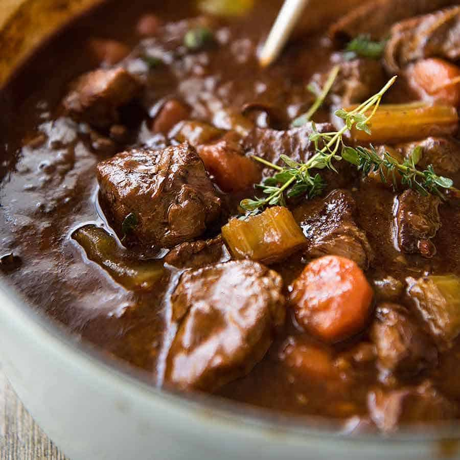

Irish Stew

Description
This is a description for this comfy irish stew
Ingredients
- 2 pounds lean beef stew meat, cut into 1-inch cubes
- 3 tablespoons vegetable oil, divided
- 2 tablespoons all-purpose flour
- 1 pinch salt and ground black pepper to taste
- 1 pinch cayenne pepper
- 2 large onions, chopped
- 1 clove garlic, crushed
- 2 tablespoons tomato paste
- 1 ½ cups Irish stout beer (such as Guinness)
- 2 cups chopped carrot
- 1 sprig fresh thyme
- 1 tablespoon chopped fresh parsley for garnish
Steps
- Toss beef cubes with 1 tablespoon of vegetable
oil. Stir flour, salt, pepper, and cayenne pepper
together in a separate bowl. Dredge beef in flour
mixture to coat.
- Heat remaining oil in a deep skillet or Dutch
oven over medium-high heat. Add beef and brown on all
sides. Add onions and garlic. Stir tomato paste into
a small amount of water to dilute; pour into the pan
and stir to blend. Reduce heat to medium, cover, and
cook for 5 minutes.
- Pour ½ cup of beer into the pan, and as it
begins to boil, scrape any bits of food from the
bottom of the pan with a wooden spoon. This adds a
lot of flavor to the broth. Pour in remaining beer,
and add carrots and thyme. Cover, reduce heat to low,
and simmer for 2 to 3 hours, stirring occasionally.
Taste and adjust seasoning before serving. Garnish
with chopped parsley.
Go to homepage